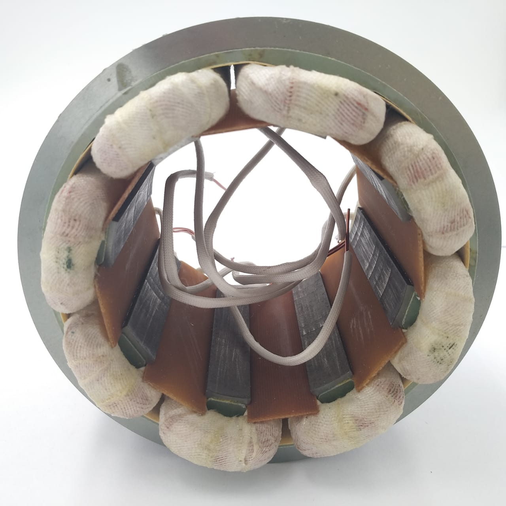

SWITCHED RELUCTANCE MOTOR
SWITCHED RELUCTANCE MOTOR
Switched reluctance motor works based on the variable reluctance principle. The rotating magnetic field is created with the help of power electronics switching circuit.The main concept is the reluctance of the magnetic circuit is depending upon the air gap. Hence, by changing the air gap between the rotor and stator, we can change the reluctance of the motor.
CONSTRUCTION:
In switched reluctance motor, the stator and rotor have projected pole made up of soft iron and silicon stampings. Silicon stamping is used to reduce hysteresis losses.
1)Stator => Inward projection
2)Rotor => Outward projection
The rotor does not have winding and stator only carries main field winding. Each winding in the stator is connected in series with the opposite poles to increase the MMF of the circuit. It is called phase winding Shown in fig, AA’, BB’ and CC’.Pole concern, the number of poles in the stator will be around 6 to 8 numbers. But the rotor carries less number of poles with respect to the stator. The rotor poles will be 4 to 8 numbers.
By increasing the number of poles we can get a low angle of rotation from the motor. The rotor’s shaft is mounted with a position sensor. The position sensor is used to determine the position of the rotor by a control circuit.The control circuit always collects the information of the rotor position and based on that the controller gives the input to the motor.
WORKING PRINCIPLE:

The working principle of switched reluctance motor is simple, let we take an iron piece. If we keep it in a magnetic field means, the iron piece will align with the minimum reluctance position and get locked magnetically.The same principle is followed in the switched reluctance motor. The minimum reluctance portion of the rotor tries to align itself with the stator magnetic field. Hence the reluctance torque is developed in the rotor.Hence the motor starts rotating due to the torque developed.
TYPES OF SWITCHED RELUCTANCE MOTOR:
Based on the construction the SRM is divided into two categories. One is linear SRM and another one is rotary SRM.
1)Linear SRM: Single-step Stator and rotor
2)Rotary SRM: More than one step stator and rotor
ADVANTAGES:
- It does not require an external ventilation system as the stator and rotor slots projected. The airflow maintained between the slots.
- The rotor does not have winding since therefore no need keeps the carbon brush and slip ring assembly.
- Since the absence of permanent magnet, such motors are available at a cheaper price.
- Simple three or two-phase pulse generator is enough to drive the motor.
- The direction of the motor can be reversed by changing the phase sequence.
- Self-starting and does not require external arrangements.
- Starting torque can be very high without excessive inrush currents.
- High Fault Tolerance
- Phase losses do not affect motor operations.
- High torque/inertia ratio.
- High starting torque can be achieved.
DISADVANTAGES:
- Creates Torque ripple at high-speed operation.
- The external rotor position sensor is required.
- Noise level is high
- At a higher speed, the motor generates harmonics, to reduce this, we need to install larger size capacitors.
- Since there is an absence of Permanent Magnet, the motor has to designed to carry high input current. It increases the converter KVA requirement.
APPLICATIONS:
Domestic appliances such as washing machines, vacuum cleaners, fans etc.